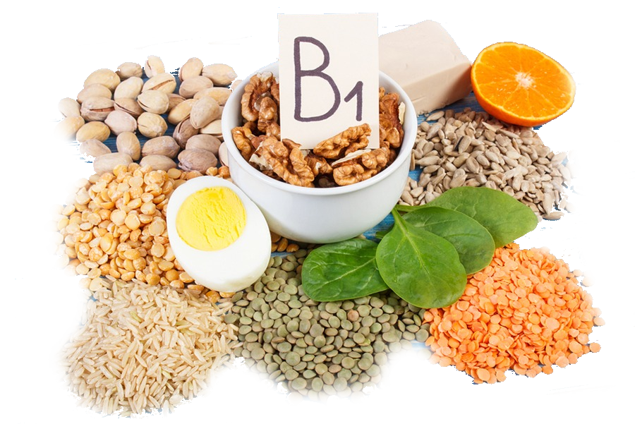

שלב 3-ויטמין B1
מטופל בא לבית חולים והוא בא עם התסמינים הבאים: חולשה, חוסר תיאבון, ירידה במשקל ופגיעה בזיכרון. עזרו לרופאים להבין במה הוא חולה?
ויטמין B1 נקרא גם תיאמין. הוויטמין משתתף בתגובות כימיות רבות בגוף, בין השאר בתהליך ניצול הפחמימות לשם הפקת אנרגיה, פעילות הלב, השרירים ומערכת העצבים. ריכוז הויטמין הגדול ביותר הוא בכדוריות הדם האדומות.
תפקיד- חיוני לפעילות הלב, השרירים ומערכת העצבים. הוא לוקח חלק במטבוליזם תאי ואספקת חמצן לגוף, משמש כקו-פקטור (מסייע) ליצירת מתווכים עצביים חיוניים, ביניהם אצטיל-כולין. מסייע בייצור מעטפת המיאלין של תאי העצב, חיוני לחילוף חומרים של סוכרים עבור תאי המוח, משמש ליצירת חומצת הקיבה ועוד. ריכוז הויטמין הגדול ביותר הוא בכדוריות הדם האדומות.
מחסור- כמות קטנה בלבד של הוויטמין מאוחסנת בגוף ובגלל זה חוסר בוויטמין יכול להתפתח מהר למדי. התופעות האופייניות לחוסר בוויטמין, הן חולשה, חוסר תיאבון וירידה במשקל, נדודי שינה, רגזנות ופגיעה בזיכרון.חוסר חמור יכול להתפתח למחלת ברי-ברי הגורמת לפגיעה במערכת העצבים והמוח ולפגיעה חמורה בשריר הלב.
עודף- עודף בויטמין לא מזיק לגופנו.
מצוי ב- מגוון רחב של מקורות מן החי ומן הצומח ובכמות גדולה למדי בשמרי בירה , בקטניות ובדגנים.מקורות נוספים: חלב , דגים , בשר , כבד , אורז מלא , קטניות , קמח מלא על שלל מוצריו , פירות , ירקות כגון חסה ותרד, אגוזים ועוד.
